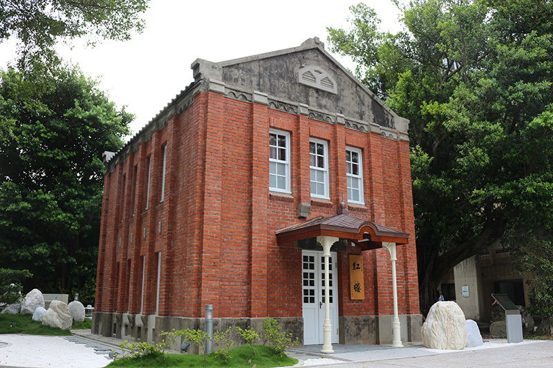

<body>
    <div class = "inter" style="margin-left: 100px">
    <div style="position: relative;">
        
        
        
    <div class = "word" style="width: 80%;">
    <h1>
        Introduction
    </h1>
    <p>
        Taipei Tech campus is located at the apex of the Taipei Metro system. Not only can students enjoy a world-class
        education at Taipei Tech, but they also gain the opportunity to enjoy the rich traditional culture that Taipei offers.
        Attractions such as Taipei 101, the Palace Museum, and the Chiang Kai-shek Memorial Hall are in close
        proximity to Taipei Tech.
    </p>
    <h2>
        <h2 id="x">History & Philosophy</h2>
    </h2>
    <p>
        Established in 1912, Taipei Tech is among one of the oldest universities in Taiwan. It was <super>1<sup>st</sup></super> established during
        the Japanese Colonial Period as the Auxiliary Industrial Institute of the Education Affairs Office of the Civil
        Administration Department. The Institute consisted of only three departments (Woodcraft, Metalwork and
        Electrical Engineering) ushered in an era of industrial education in Taiwan.
        With the long-standing history and experience in education, Taipei Tech devotes to cultivating top technical
        professionals. Taipei Tech specializes in three fields: technology, design and management. In a recent teaching
        excellence evaluation by Taiwan’s Ministry of Education, Taipei Tech was ranked first among all the other
        technological universities. It is also Number One Paradigm Technological University for its research and academic
        excellence. Taipei Tech alumni have contributed considerably to the economic development of Taiwan, and have
        won wide praise from businesses of all industries.
    </p>
    <hr/>
    <h2>
        Taipei Tech graduates
    </h2>
    <p>
        Taipei Tech graduates are the top favorite employees among Taiwan’s top 1000 enterprises, as declared by Cheers
        magazine. Taipei Tech is also renowned as top World Green University. In UI Green Metrics University Rankings,
        Taipei Tech is ranked as the 1st Green University in Taiwan and the 6th in world in the city center catergory
    </p>

    </div>
        <a href="mailto:someone@example.com">Send email</a>
        <a href="tel:123-456-7890">123-456-7890</a>
        <a href="#x">go to History & Philosophy</a>
</div>
</div>
</body>